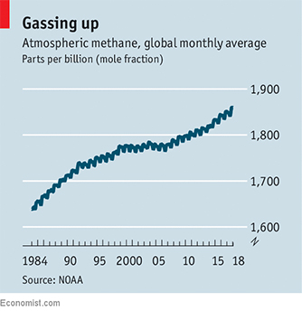
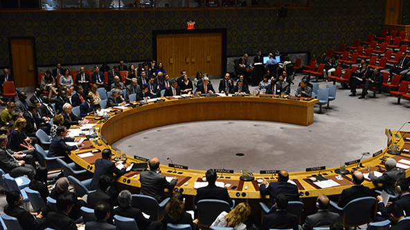
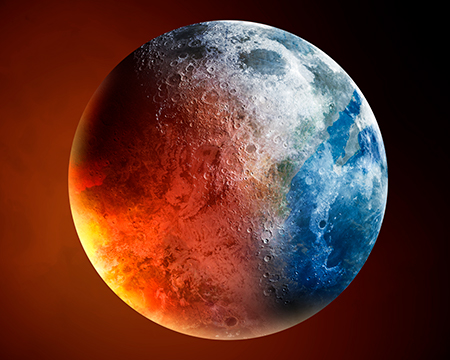
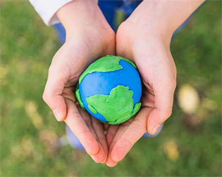

前言 1
前言
根據經濟學人（The Economist）最近的報導（Apr, 28th, 2018），過去的十年間，大氣中的甲烷（CH4）含量驟升，已達工業革命前的2.5倍（如【圖1】）。甲烷具有強大的吸熱能力，雖然大氣中甲烷的排放量相較於二氧化碳（CO2）較少，在大氣中存留十年左右後，即幾乎偵測不到，但相同分子數或相同體積的條件下甲烷造成大氣暖化的指數，卻是二氧化碳的25倍。
科學家們對於大氣中甲烷的增加提出各自的研究成果，其中，加州大學伯克利分校的 Alexander Turner 研究團隊認為大氣中氫氧自由基（．OH）的減少，是大氣中甲烷驟升在數學上最有可能的解釋。因為．OH 可與甲烷反應，產生水及二氧化碳，進而消解大氣中的甲烷。然而為什麼大氣中．OH 會減少則是另一個未解的難題。
小柯想探討「．OH 對甲烷的影響」，根據相關文獻設計了以下實驗。
科學家們對於大氣中甲烷的增加提出各自的研究成果，其中，加州大學伯克利分校的 Alexander Turner 研究團隊認為大氣中氫氧自由基（．OH）的減少，是大氣中甲烷驟升在數學上最有可能的解釋。因為．OH 可與甲烷反應，產生水及二氧化碳，進而消解大氣中的甲烷。然而為什麼大氣中．OH 會減少則是另一個未解的難題。
小柯想探討「．OH 對甲烷的影響」，根據相關文獻設計了以下實驗。

【圖1】
【圖1】
實驗 1
小柯設計的實驗及操作步驟如下：（請點選「>」觀看實驗）
| 秒 | A 瓶溫度 | B 瓶溫度 | C 瓶溫度 |
|---|---|---|---|
| 0 | 20.0 | 20.0 | 20.0 |
| 25 | |||
| 50 | |||
| 75 | |||
| 100 | |||
| 125 | |||
| 150 | |||
| 175 | |||
| 200 |
1. 小柯取了三個2公升裝的寶特瓶，各自滴入一滴的水並裝滿空氣後鎖緊（此時水會蒸發成水蒸氣），分別編號A、B、C。
請回答下列問題
| 秒 | A 瓶溫度 | B 瓶溫度 | C 瓶溫度 |
|---|---|---|---|
| 0 | 20.0 | 20.0 | 20.0 |
| 25 | 25.5 | 26.5 | 29.0 |
| 50 | 28.0 | 29.0 | 30.5 |
| 75 | 29.0 | 29.7 | 31.0 |
| 100 | 29.2 | 30.0 | 31.2 |
| 125 | 29.4 | 30.2 | 31.3 |
| 150 | 29.5 | 30.4 | 31.4 |
| 175 | 29.6 | 30.5 | 31.5 |
| 200 | 29.6 | 30.5 | 31.5 |
溫度 (°C)
時間 (秒)
1. 小柯根據【表1】在右方方格紙上作圖，但是不小心忘記標示圖例了！你能夠幫忙配對曲線與圖例嗎？
→
→
→
2. 上述實驗1中，寶特瓶 A 扮演的角色為何？（請於A、B、C組中 選一項）；又操作步驟二中目的為控制何種變因？（請於D、E、F中選一項）
扮演角色：
(A) 實驗組
(B) 對照組
(C) 光照組
控制變因：
(D) 氣體密度
(E) 氣體體積
(F) 不同暖化指數的氣體
實驗 2
進行完實驗1之後，小柯繼續設計「實驗2」：（請點選「>」觀看實驗）
| 秒 | A 瓶溫度 | B 瓶溫度 | C 瓶溫度 |
|---|---|---|---|
| 0 | 20.0 | 20.0 | 20.0 |
| 25 | |||
| 50 | |||
| 75 | |||
| 100 | |||
| 125 | |||
| 150 | |||
| 175 | |||
| 200 |
1. 小柯知道水蒸氣會因為紫外線照射而形成．OH，故進行實驗2時，先以紫外燈照射三個寶特瓶一段時間後，才開啟燈泡進行與實驗1相同的實驗步驟來進行探究。
請回答下列問題
| 秒 | A 瓶溫度 | B 瓶溫度 | C 瓶溫度 |
|---|---|---|---|
| 0 | 20.0 | 20.0 | 20.0 |
| 25 | 25.6 | 26.6 | 27.4 |
| 50 | 28.1 | 29.0 | 29.6 |
| 75 | 29.0 | 29.7 | 30.2 |
| 100 | 29.3 | 30.0 | 30.4 |
| 125 | 29.4 | 30.2 | 30.7 |
| 150 | 29.6 | 30.5 | 30.8 |
| 175 | 29.6 | 30.5 | 30.9 |
| 200 | 29.6 | 30.5 | 30.9 |
溫度 (°C)
時間 (秒)
3. 粗心的小柯同樣也將實驗2作圖結果的圖例搞混了！請你再一次幫忙配對曲線與圖例。
→
→
→
請回答下列問題
A 瓶 B 瓶 C 瓶
4. 請比較剛剛繪製的【實驗1】和【實驗2】，A、B、C 曲線各有什麼變化？(多選題，應選2項)
A曲線幾乎不變
B曲線有明顯變化
C曲線幾乎不變
C曲線變得更貼近 B曲線
C曲線和 B曲線疊合
請回答下列問題
A 瓶 B 瓶 C 瓶
5. 倘若你剛剛的紀錄正確，實驗2的變化曲線中，A、B曲線幾乎沒有改變，但C曲線變得較貼近B曲線，可推論其原因為何？
（請以「因為...，所以...」的寫作方式作答。）
6. 對於實驗目的而言曉明和小華有各自的想法，曉明認為僅需要進行實驗2即可，而小華認為兩組實驗都要做。你贊同哪一位同學的觀點呢？為什麼？
（請先根據實驗的結果進行敘述，再說明能支持論點的論證基礎）
前言 2

示意圖，Image credit: U.S. Department of State
根據經濟學人最近的報導，過去的十年間，大氣中的甲烷（CH4）含量驟升，已達工業革命前的2.5倍。甲烷具有強大的吸熱能力，雖然甲烷的排放至大氣中的量相較於二氧化碳少，且在大氣中存留十年左右後，即幾乎偵測不到，但相同分子數或相同體積的條件下，甲烷造成溫室效應的威力，卻是二氧化碳的25倍，影響短期氣候甚鉅。然而在聯合國政府間氣候變遷專門委員會（IPCC）指出將地球升溫控制在攝氏1.5度之內，為防止氣候變遷帶來嚴重災難的唯一方法。在短期氣候變遷的議題中，探討大氣中甲烷的來源與消耗尤為重要。
前言 2（續）

示意圖，Image credit: rawpixel.com on Freepik
甲烷於地球大氣中總量已達到1,900 百萬噸，其中人為活動影響的來源包括：
化石燃料的產生與使用（105百萬噸/年）
農業、畜牧業與廢棄物（188百萬噸/年）
自然產生的來源包括：
生物性燃燒（34百萬噸/年）
濕地（167百萬噸/年）
其他自然現象（例如：地質湖泊、海洋、永凍土）（64百萬噸/年）
於大氣中消耗甲烷的方式有：
氣溶膠沉降（33百萬噸/年）
光化學反應（515百萬噸/年）
化石燃料的產生與使用（105百萬噸/年）
農業、畜牧業與廢棄物（188百萬噸/年）
自然產生的來源包括：
生物性燃燒（34百萬噸/年）
濕地（167百萬噸/年）
其他自然現象（例如：地質湖泊、海洋、永凍土）（64百萬噸/年）
於大氣中消耗甲烷的方式有：
氣溶膠沉降（33百萬噸/年）
光化學反應（515百萬噸/年）
請回答下列問題
7. 甲烷於地球大氣中總量已達到1,900百萬噸，請根據【前言 2甲烷於地球大氣中總量已達到1,900 百萬噸，其中人為活動影響的來源包括：
化石燃料的產生與使用（105百萬噸/年）
農業、畜牧業與廢棄物（188百萬噸/年）
自然產生的來源包括：
生物性燃燒（34百萬噸/年）
濕地（167百萬噸/年）
其他自然現象（例如：地質湖泊、海洋、永凍土）（64百萬噸/年）
於大氣中消耗甲烷的方式有：
氣溶膠沉降（33百萬噸/年）
光化學反應（515百萬噸/年）】所提示的甲烷數值來源與消耗，建立地球大氣甲烷的存耗模型。
（將右側圖示拖曳至下方模型的「來源」或「消耗」區域，並在模型中填上「大氣甲烷總量」）
請回答下列問題
8. 目前已有105個國家簽署「全球甲烷承諾」的國家，本國為一開發中國家，能源有98%仰賴進口，其中約94%為化石能源。使用天然氣的燃氣發電為38.6%，未來會逐步調整為50%，能源最終用途以工業為主，佔54%，每人平均排碳量約為全球2.5倍。
請用滑鼠點擊上方人像，聽聽各方的說法。
若你是決策者，是否要簽屬甲烷減量的氣候協議？理由為何？並說明呼應全球議題可能實施政策。
若你是決策者，是否要簽屬甲烷減量的氣候協議？理由為何？並說明呼應全球議題可能實施政策。
請回答下列問題

示意圖，Image credit: Freepik
9. 提出至少三個可以阻止全球升溫的科學性方法。
請回答下列問題
10. 完成「甲烷疑雲」試題後，是否有觸發你的什麼思想想法和行為行動？
無，沒有想法。
有，我想要 ......
示意圖，Image credit: tawatchai07 on Freepik